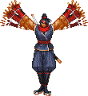
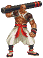
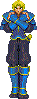
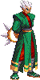
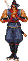
23-2-2002 Good for my this character has been an entire challenge, since never he had worked so much in a character, since his ripeo is really complicated, it was necessary to remove the shade that neither the NeorageX could make it. So alone to imagine this character's difficulty, this character counts with but of 1230 sprites and a quite complicated and extensive code, it also possesses two sensational supermagias with but of 225 animations, I have also added him 3 aleatory assistants, which 2 of them make different things for not getting bored, and already to finish him added a potent Intro and one purified AI and two good friends have created among the two 12 yokels.. Also to stand out that I have been faithful to the original character and that with a button you rot to make those wonderful combos and it will seem that you have caught the original character and these playing with the, at least that it has been my intention.
Without but that to say that you enjoy it. And I hope you like intro I believe that it is very faithful to the original.
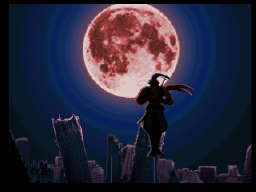
If you like characters of Sengoku 3 I recommend that you go down to Falcon that made Illusionist character's marvel: http://bmt.mgbr.net/
MOVEMENTS
Button TO: This button is the low fist, if you press it far he will simply make that a weak fist, but if you press it close and you pulse again I will make it three blows depending on how many times you pulse, this is the same as in the arcade.
Button B: The same thing can say of this alone button that with swords. Really beautiful the effect of having picked up of sword.
Button C: This button is new in the arcade it was the jump but here it is a high kick. (It is that I looked like each other wrong a little to leave two bellboys.
Button X: Another added button that it is simply the long wirh sword.
Button AND: Double espadazo their name tells it all two espadazos better than one.
Button Z: Kick to the returned stocking the enemy against the wall.
This character not yet has stooping movements although maybe in a new version if he will have them.
MAGIC
Kagetsura will give a long espadazo
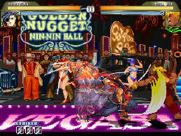
F,F+a
Kagetsura will run and he will give you a kick. F,F+b
Launching of Shuriken or it shatters ninja: = ~D, DF, F, to or ~D, DB, B, to----200 Power
Sword of the ray:
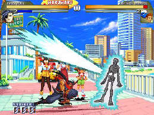
~D, DF, F, b or ~D, DB, B, b----1000 Power
Invocation to the Dragon
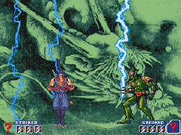
~D, DF, F, c or ~D, DB, B, c----2000 Power
Super Thunder
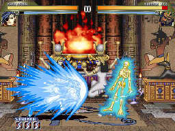
~D, DF, F, xo ~D, DB, B, x----1000 Power
Kagetsursa throws bomb two intensities
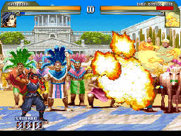
~D, DF, F, me ~D, DB, B, and----500 Power
Launching of Plate = ~D, DF, F, z or ~D, DB, B, z----200 Power
You can break the plate.
Magic of the one (Escape)
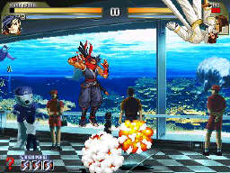
A+B - 100 LIFE
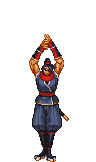
TELETRANSPORTACION B+CFinal magic
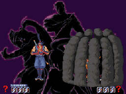
A+X - 1000 magic
It recharges
A+B+C
Launching of Dagger
Y+Z
Helpers: C+X
Kagetsura possesses of three assistants that will make you but easy the fight is several conditions so that the helper comes out one it is that you don't give very followed since you should give time to that the helper leaves and another that the character or player 2 are not in the air when carrying out a certain movement like the one grabs. The helpers can use them 3 times for combat. The Helpers are damages
Launching of Bird of Fire and magic of Buda
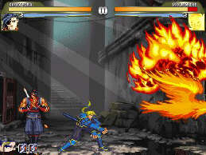
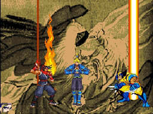
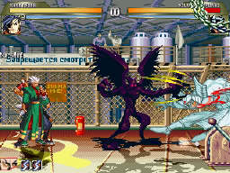
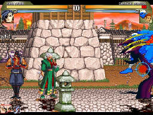
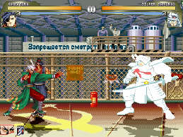
As you see this it is the helper that makes three different things it can invoke a demon or a claw or the boomerang that will give you can rush and it will return to the one.
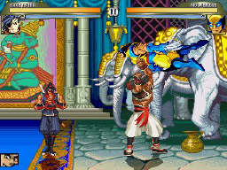
This assistant will catch the enemy and I/you/he/she threw it against the floor.
SUPERCOMBO 8 BLOWS DAMAGE MAXIMUM
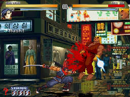
B+X
This is the I warp maximum of 9 blows if he/she gives you the first one all the other ones you don't rot to avoid them it removes 350 and it is used as defense against authentic murderers as Ogre or Evil Ken you need 2000 of magic
To catch the Enemy.
Kagetsura can catch the enemy and to make that it flies for the airs like in the arcade as well as to shatter it against the floor.
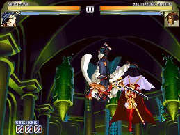
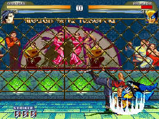
Button c + near the enemy and AND near the enemy
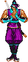
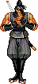
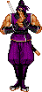
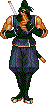
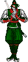
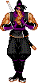
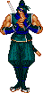
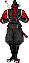
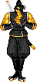
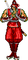
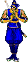
GRATEFULNESS.
In the first place I want to thank the whole people that gives me their support and spirits with their emails, to also thank to Illusionist that helped me and he gave me to Falcon to Kain the Supreme to always lean on, to Keioh to always cheer up, to the whole channel IRC of Spain, to Hispamugen to HispaniaMicromor Mugen and to Clarens to be devoted its time and to make some magnify yokels as well as to you that have descended the character I hope you like. Ah forgot me to SNK to create so wonderful game and to a person that without its help this character had never been created.
Juan Carlos